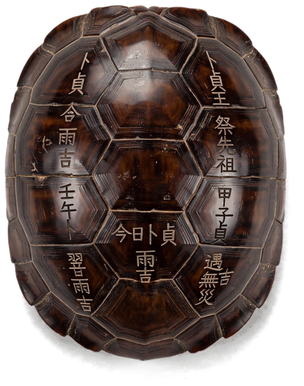

戊日不上香
什么是暗戊日？
距离下个明戊日还有
–天
此刻干支
--:--:--
–年柱
–月柱
–日柱
–时柱
修行打卡
每日打坐内练，早晚功课打卡；坚持就是修行。
八字排盘
输入出生时间，一键起四柱八字、大运。
六爻占卜
摇一摇手机，龟壳落铜钱，六爻成卦，断吉凶。
每日打坐内练，早晚功课打卡；坚持就是修行。
输入出生时间，一键起四柱八字、大运。
摇一摇手机，龟壳落铜钱，六爻成卦，断吉凶。
经文库为高级版功能，解锁后可读诵、检索道藏精选经文。
进阶提醒时间与戊日提醒相同。
如果提醒不准时，请到手机「设置 → 应用 → 戊日不上香」中允许「通知」与「闹钟和提醒」。应用被省电策略清理后台也可能影响提醒，可将本应用设为「不受电池优化限制」。
测试用，不影响正式提醒排期。点击后约 15 秒内发出一条测试通知，用于验证通知权限与提醒通道是否正常。

经文库、桌面小组件、年历总览、修行打卡、八字排盘，一次买断，永久使用。
身在海外时，若按国内老黄历对照请选择「北京时间」。
戊日不朝真。本应用按日柱天干推算戊日并提前提醒，农历、干支、节气、宜忌均由内置历法库离线计算。
戊日不上香 隐私政策
生效日期：2026年9月28日
·
·
设置提醒时间后，每天到点会收到通知。
颜色越深，打卡越多。
时间不详可留空，则只排三柱（年/月/日）。
按城市经度自动换算真太阳时（未含均时差，仅供参考）。
性别影响大运顺逆。真太阳时按出生地经度换算，仅供参考。
通过 Google Play 安全支付。更换设备或重装后，可用「恢复购买」找回高级版。